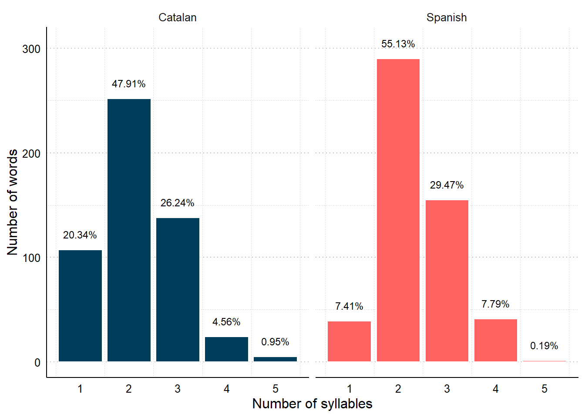
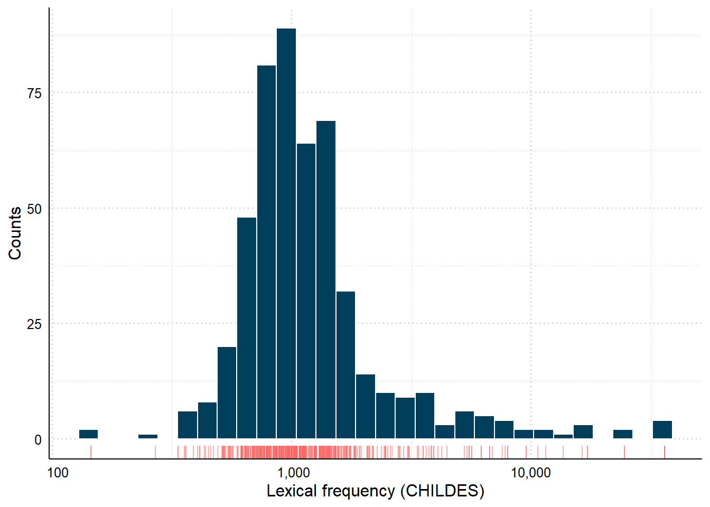
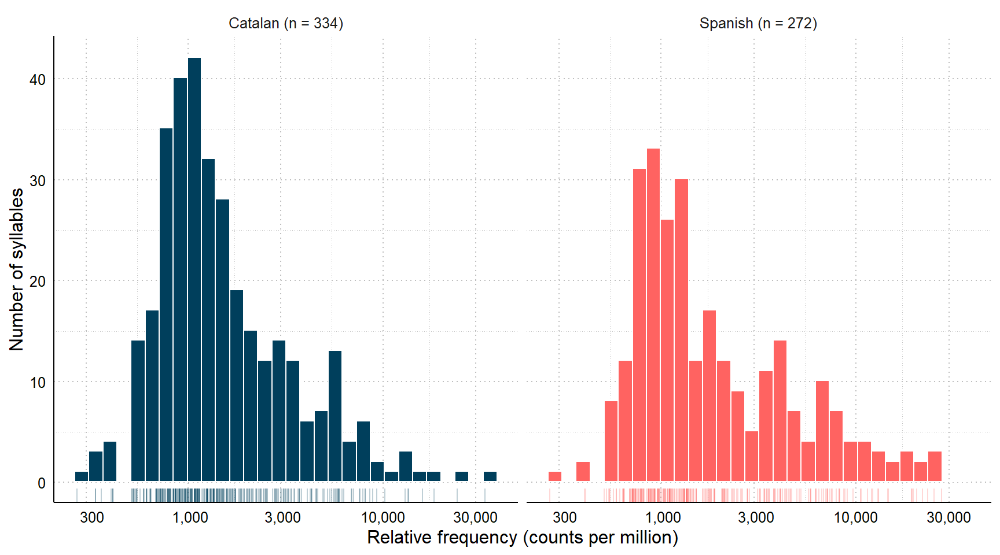
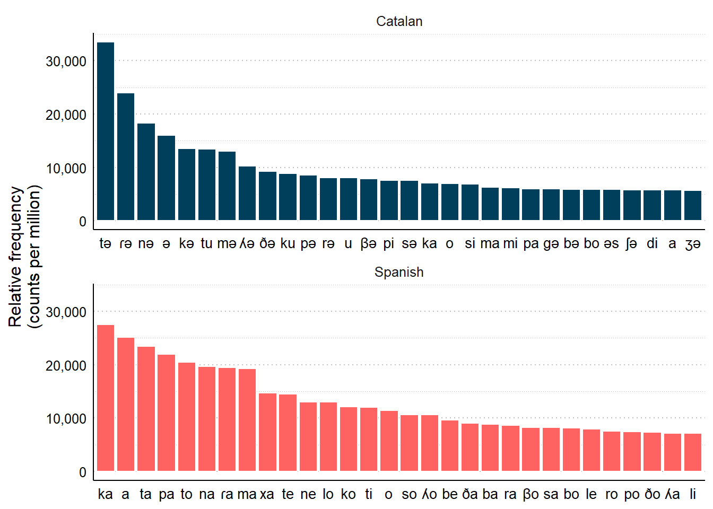
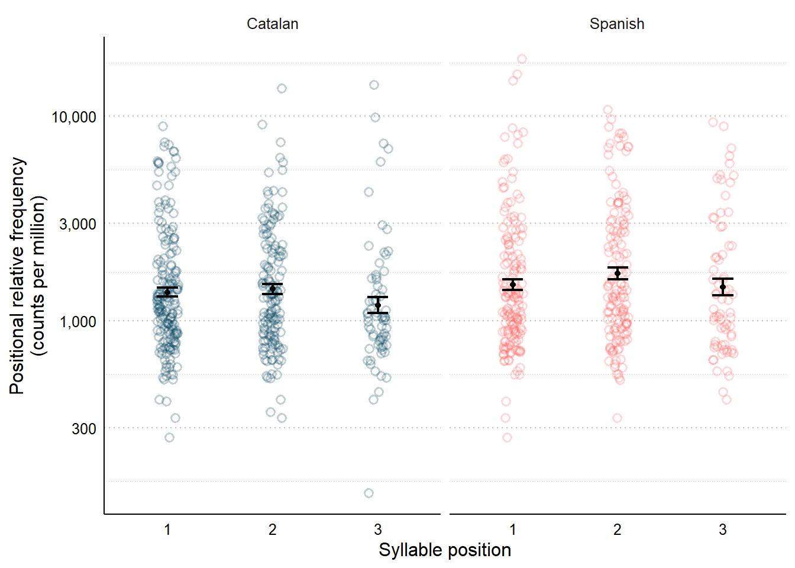
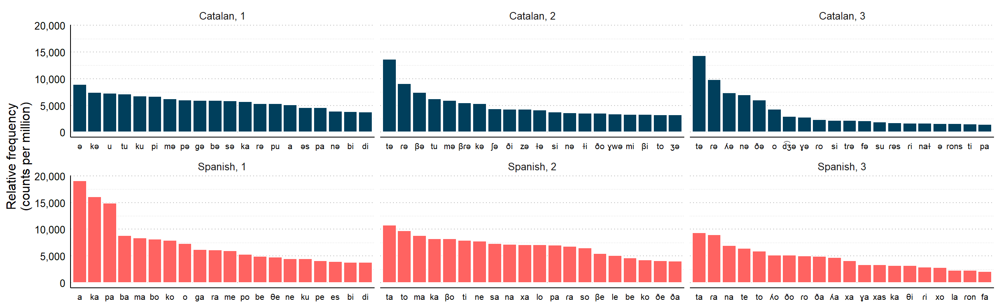
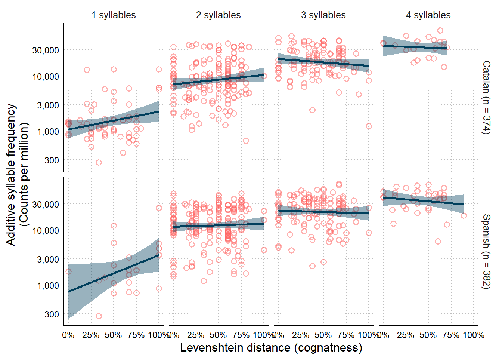

Syllable frequency by cognateness
We define syllable frequency as the rate of appearance of individual syllables in the word-forms included in the Barcelona Vocabulary Questionnaire (BVQ). Each item corresponds to a Catalan or Spanish word, and has an associated phonological transcription in International Phonological Alphabet (IPA) format. These transcriptions are syllabified: syllables are separated by the . or the ˈ (marking that the upcoming syllable after is) symbols. Some examples:
| Translation equivalent | Catalan | Spanish | ||
|---|---|---|---|---|
| Item | IPA | Item | IPA | |
| fly (animal) | mosca | ˈmos.kə | mosca | ˈmos.ka |
| juice | suc | suk | zumo | ˈθu.mo |
| bun | brioix | bɾiˈɔʃ | brioix | ˈbo.ʎo |
| dinosaur | dinosaure | di.nuˈsaw.ɾə | dinosaurio | di.noˈsaw.ɾjo |
| comb (object) | pinta | ˈpin.tə | peine | ˈpej.ne |
| rain | pluja | ˈpɫu.ʒə | lluvia | ˈʎu.βja |
| police | policia | pu.ɫiˈsi.ə | policia | po.liˈθi.a |
| nose | nas | nas | nariz | naˈɾiθ |
| ambulance | ambulància | əm.buˈɫan.si.ə | ambulància | am.buˈlan.θja |
| trolley | cistella (compra) | sisˈte.ʎə | carrito (compra) | kaˈri.to |
| train | tren | tɾɛn | tren | tɾen |
| grandma | àvia | ˈa.βi.ə | abuela (yaya) | aˈβwe.la |
| bicycle | bici / bicicleta | bi.si | bici / bicicleta | ˈbi.θi |
| oven | forn | forn | horno | ˈoɾ.no |
| fish (food) | peix | peʃ | pescado | pesˈka.ðo |
| sea | mar | mar | mar | maɾ |
| aunt | tia / tieta | ˈti.ə | tía | ˈti.a |
| cloud | núvol | ˈnu.βuɫ | nube | ˈnu.βe |
| racket | raqueta | rəˈkɛ.tə | raqueta | raˈke.ta |
| party | festa | ˈfes.tə | fiesta | ˈfjes.ta |
Number of syllables

Lexical frequencies
We extracted lexical frequencies from the English corpora in the CHILDES database. Using the Catalan and Spanish corpora was not possible due to the low number of children and tokens included in the corpora.

Weighting syllable counts by lexical frequency
Every exposure to a word-form also counts as a exposure to each of the syllables that make up such word. Every time a child hears the word casa [house], they are exposed to the syllables ca and sa. Syllables that appear embedded in words with higher lexical frequency will also be more frequent. To compute the relative frequency of each syllable in Catalan and Spanish (i.e., how many times the syllables appears in every million words in Catalan or Spanish speech), we summed the relative lexical frequency in CHILDES of every word that contains such syllable in the corresponding language.


Positional syllable frequency


Are cognates made of more frequent syllables?
